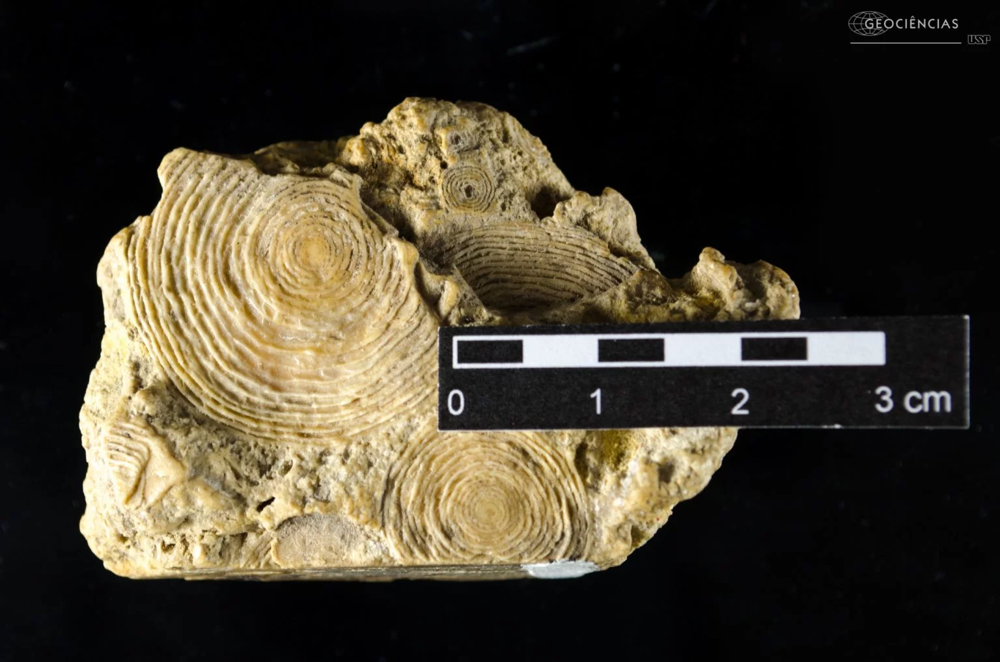
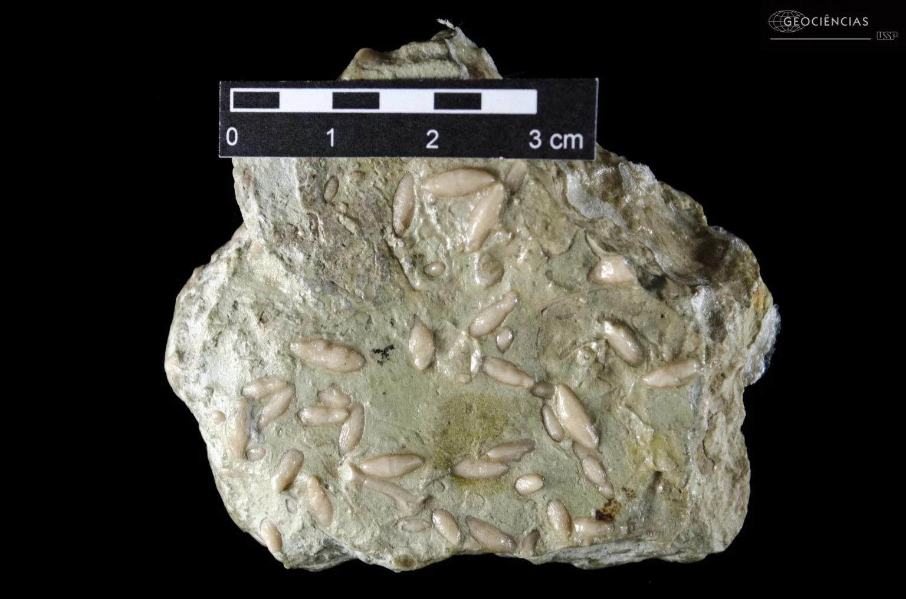
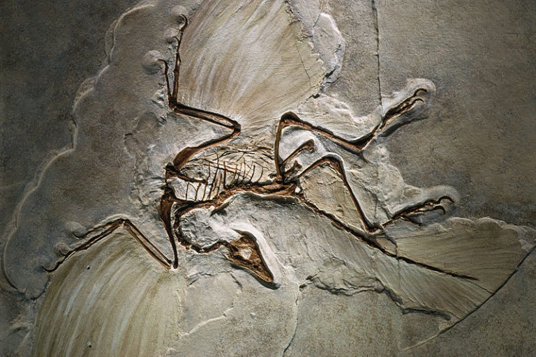
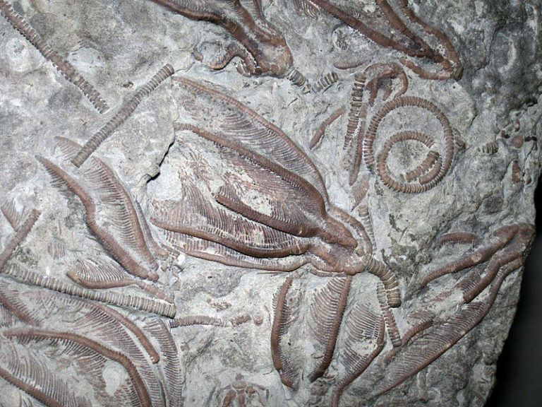
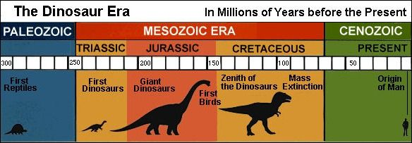
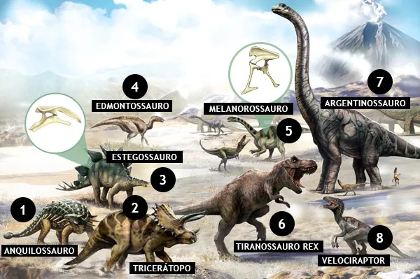

A Paleontologia é um ramo da Biologia que estuda os fósseis, isto é, vestígios ou partes dos corpos de animais extintos deixados em rochas sedimentares, como arenito, calcário e folhelho, eles são estudados pois eles comportam em si a história do planeta, a evolução das espécies animais e também provas da existência de seres vivos que foram extintos. Estes vestígios e as partes dos animais para serem consideradas fósseis tem que ter aproximadamente de 10.000-11.000 anos de idade, pois, ajuda a distinguir fósseis de "fósseis vivos", que são organismos com mudanças evolutivas mínimas e que se assemelham muito a espécies atuais, fornecendo assim poucas informações sobre o passado do planeta
Micropaleontologia: É a área que estuda os fósseis microscópicos. Estes fósseis são chamados de microfósseis e são considerados assim quando no seu estado adulto, têm menos 1-2 mm de dimensão máxima ou a fósseis de partes isoladas(dentes, ossículos, carapaças, etc.) de organismos de maiores dimensões dessa classe dimensional.
Exemplos:


Tafonomia: É o estudo de como os fósseis são preservados, isto é, quais são as causas naturais para que um fóssil não se decomponha mesmo após milhões de anos.
Exemplo:


Biocronologia: É o estudo da correlação do tempo geológico utilizando a evolução e a sucessão de fósseis (organismos) na Terra.
Exemplo:

Sistemática: É o estudo da classificação de todos os seres vivos(plantas, fungos, bactérias, etc), estudando as relações evolutivas entre eles.
Exemplo:
